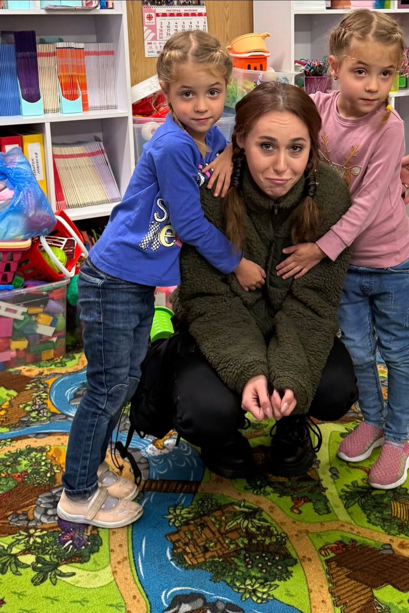
01 / FAMILIES
Children and families
Everyday items, food, school supplies and moments of ordinary joy.
We are a small team that listens, organizes and delivers aid in person. We travel to meet people, even when the road gets difficult.


SZALIKI is a nonprofit association. Since Russia’s full-scale invasion began, we have organized humanitarian aid for Ukraine. We speak with people on the ground, ask what they really need, pack the car and set off.
We don't talk about the war from afar. We talk about meetings, everyday life and small gestures that help you get through a difficult day.
Discover our stories →We tailor help to people and situations. First we talk, then we act.

Everyday items, food, school supplies and moments of ordinary joy.

Support for the elderly and blind, tailored to their needs.

We have already bought two ambulances and in total we have taken three ambulances to Ukraine.

We provide needed support to those serving in Ukraine.

Food and support for people who take care of their animals despite the war.
We identify with humanitarian aid and stick to its basic goal: saving lives and alleviating suffering. We also support soldiers because they protect and evacuate civilians.
This relationship works both ways. Soldiers help us reach people with help, and we support them in activities that protect life. The common denominator is concern for people and their safety.
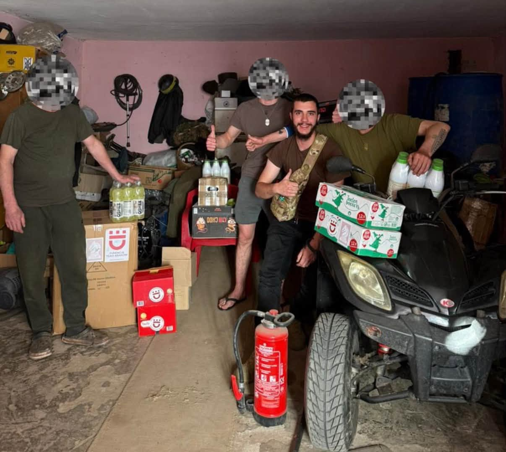


You can't prepare for everything. It's hard to keep your cool when explosions are nearby - we know this from our own experience. Then try not to be paralyzed by fear and focus on one step: reaching a safe place.
First, follow local announcements and choose the indicated, proven shelter. If you can't reach it, look for a solid, undamaged building and a room without windows. This may be a suitable basement; if there is no safe access to it, choose a place where there are at least two solid walls separating you from the outside space. This is an emergency solution: it does not replace shelter and does not guarantee protection in the event of a direct hit.
Preparation helps, but in the hardest moment, try to focus on the next safe step.
Safety guide →Photos from trips, deliveries and moments that make up the everyday activities of the SZALIKI.

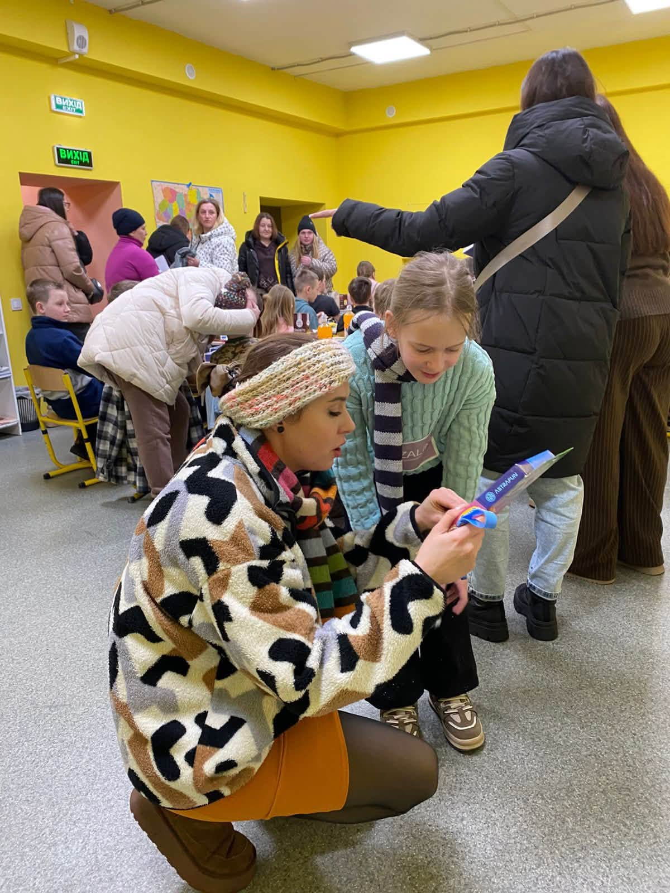
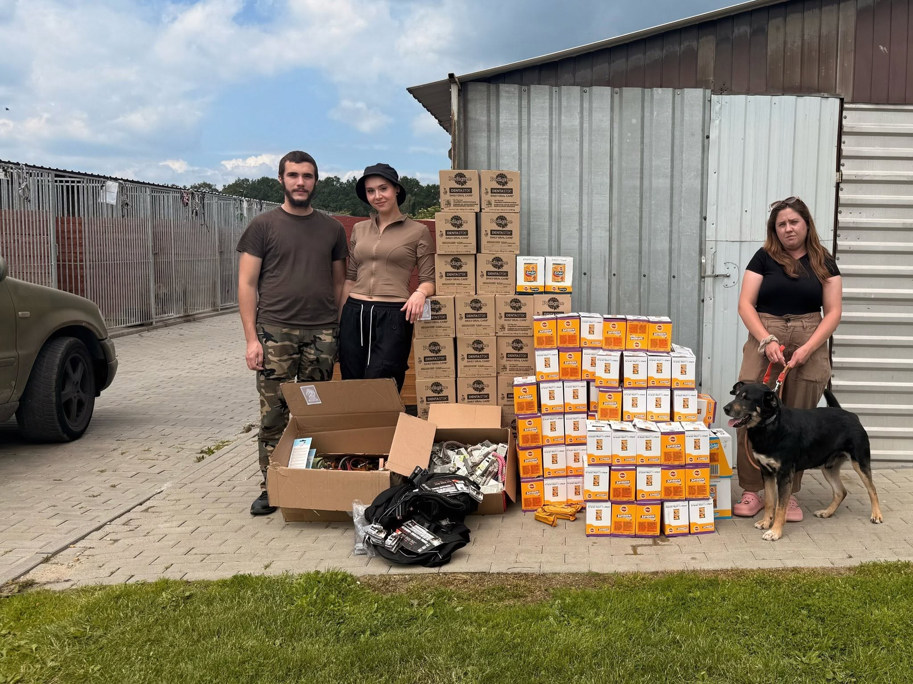

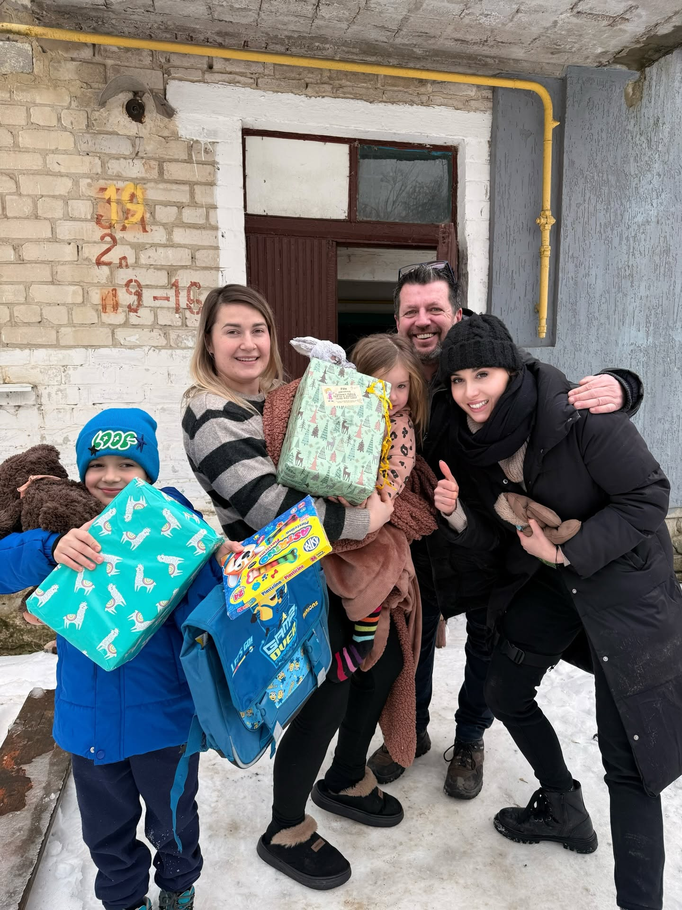
Having fun together, sweets, notebooks and time spent together.

First we listen. Then we look for a way to help together.

Donations, packing and volunteer work make up a collaborative effort.
Behind every road there are people and organizations that have been supporting the common effort for years.
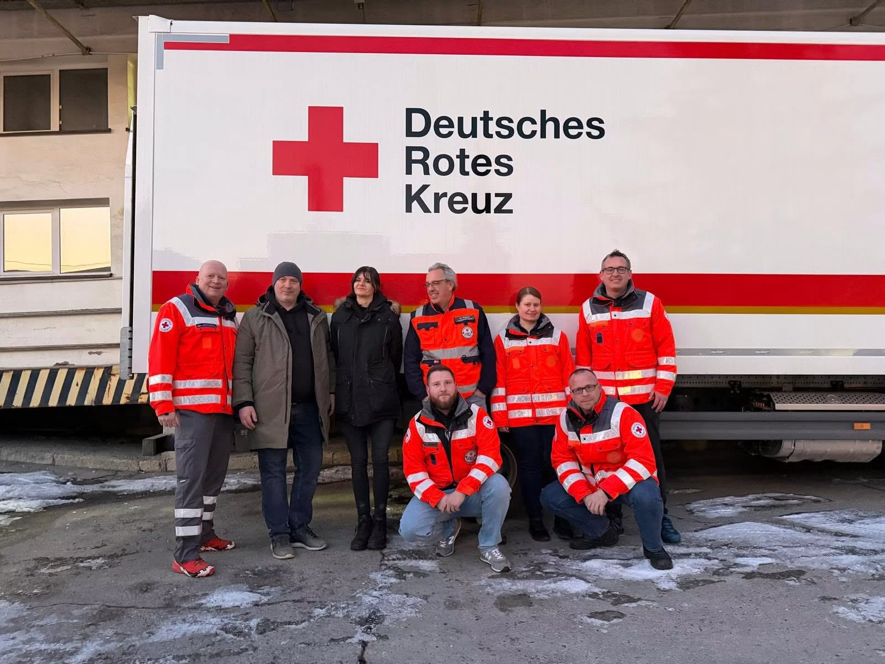
The German Red Cross has supported us from the very beginning of our activities. This collaboration helps us get help where it's needed.

This is our closest partner. We share similar values, attentiveness to people's needs and the belief that effective help begins with cooperation.
Do you want to support our activities as a partner? Let's talk.
It was created on the initiative of volunteer Katarzyna Kubanek, previously active in Szaliki. It's good to see good coming from good.
He supported us several times with large purchases, thanks to which we were able to prepare the necessary things and pass them on.
He repaired our "SZALIKI Tank" - a car without which we would not be able to reach where help is especially needed.
Thanks to Mrs. Elena and common values, we reach the front with help. What unites us is our concern for people.
We wholeheartedly thank these partners and many other amazing people and organizations. Your trust, kindness and specific support are part of every path we can travel together.
Donation supports fuel, organization and delivery of aid.
Choose a form of support that is safe for you.
Transfer title: Donation for statutory purposes
We operate non-profit, so every zloty is real help. Thank you for your support.
Simple explanations of concepts from humanitarian relations and activities. No military jargon where it's not needed.
Open extended dictionary →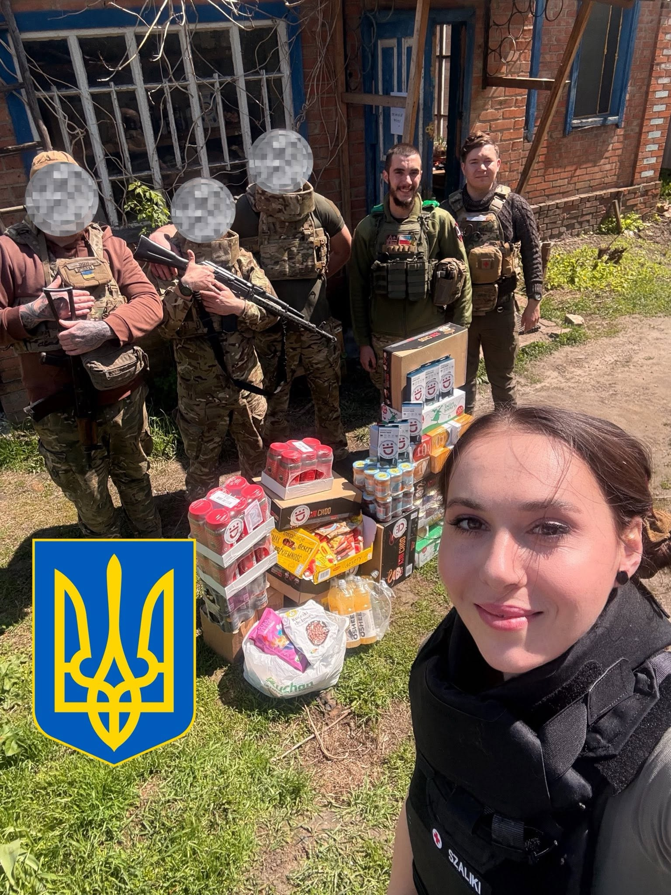
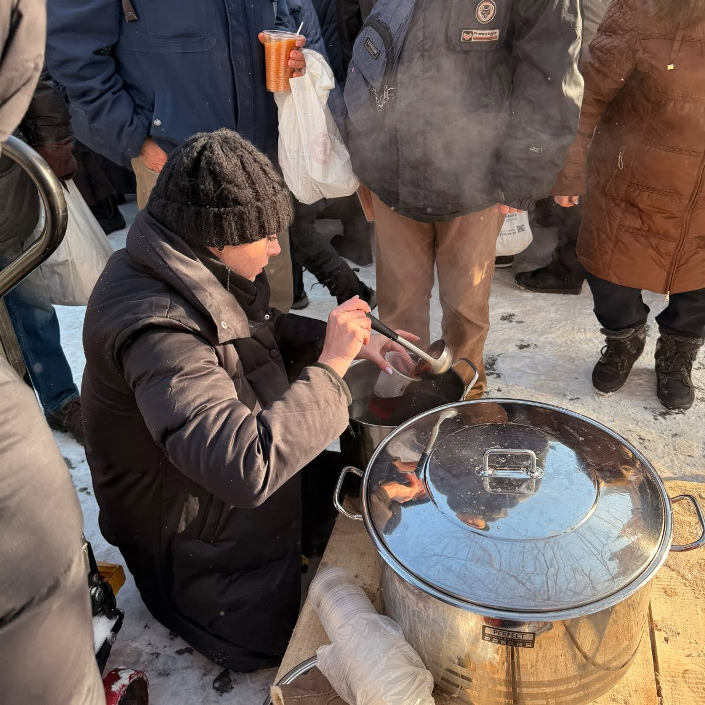

Steadfast Point (Ukrainian пункт незламності) in Kharkov was a place where you could come, eat hot soup and warm up.
During Russia's winter attacks on energy infrastructure, many people were left without heating as temperatures dropped to almost −30°C. Together with Caritas Spes Kharkiv we cooked soups and welcomed those who needed a warm meal and a moment in a safe place.
This place is sometimes called a hospice, but the people living there do not like this term. For them, it's just home - the place where they live.
They are run by volunteers who are close to the residents and their daily needs. We come there to help and meet people for whom not only support is important, but also the feeling that they are at home.
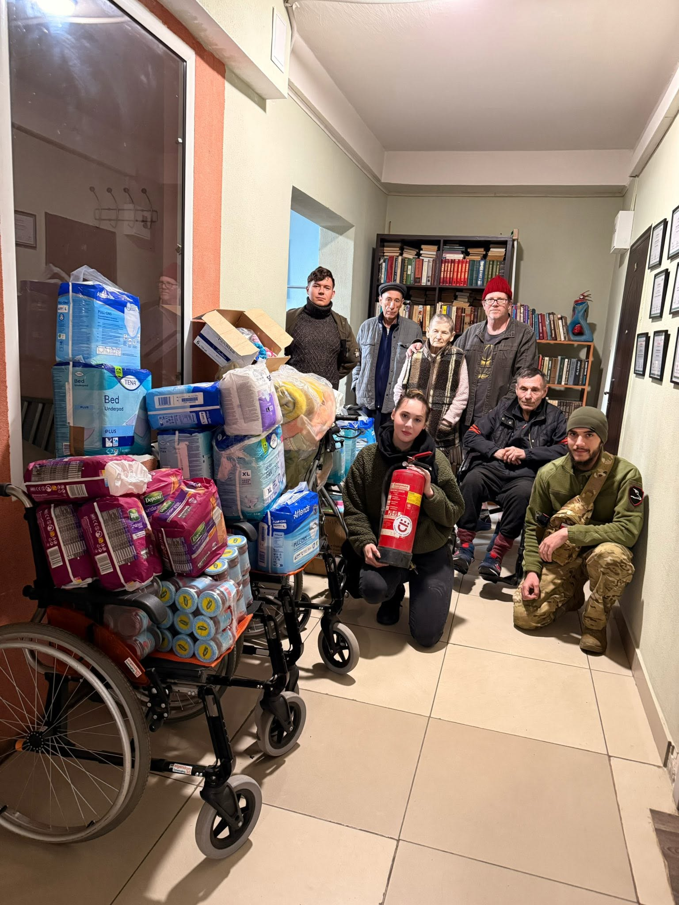
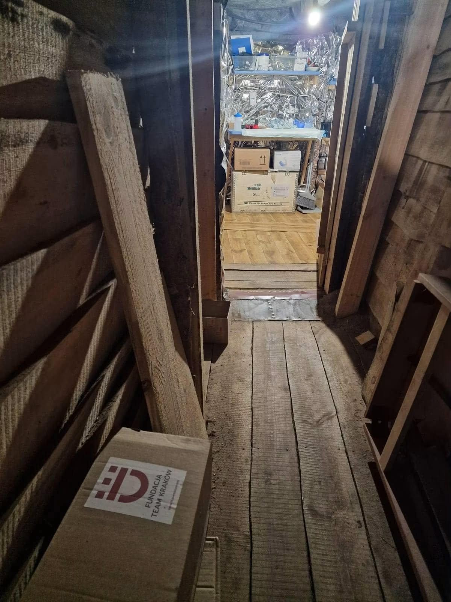


We support medical facilities located close to the front lines by providing needed materials and aid. We also reach underground hospitals on the front line.
Behind every such place there are people who take care of patients every day in difficult conditions.
We are a team that laughs a lot, jokes and sometimes fools around. It helps us to be together and help. But in dangerous places - especially in extreme moments - you need to remain alert and self-controlled.
People die in war. That is why we carefully observe the surroundings, listen to people who know the situation on site and do not underestimate the threats. Calmness helps protect ourselves, the team and the people we go to.


War is not a story with a clear end. Destruction and mourning are intertwined with the stubbornness to get up the next day, make tea, and call loved ones. Hope does not invalidate tragedy. Sometimes it's just that people, despite everything, don't stop being there for each other.
It's hard for us too. But after we leave, we can go home. For the people we meet, these streets and apartments are home - even when they are damaged, dangerous or no longer have what made them feel safe. This thought stays with us long after we return.
We don't want to speak on their behalf. We can come, listen and be there. And then come back with help.

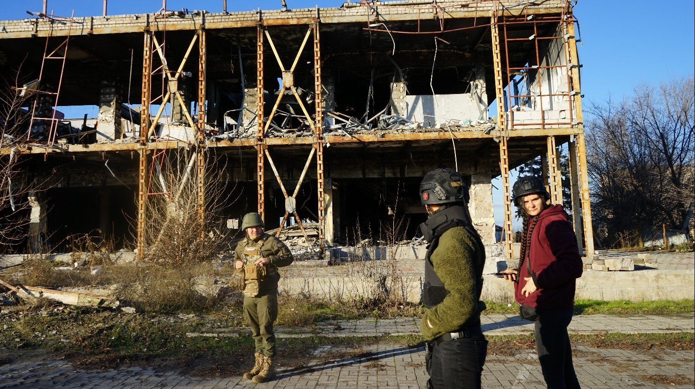

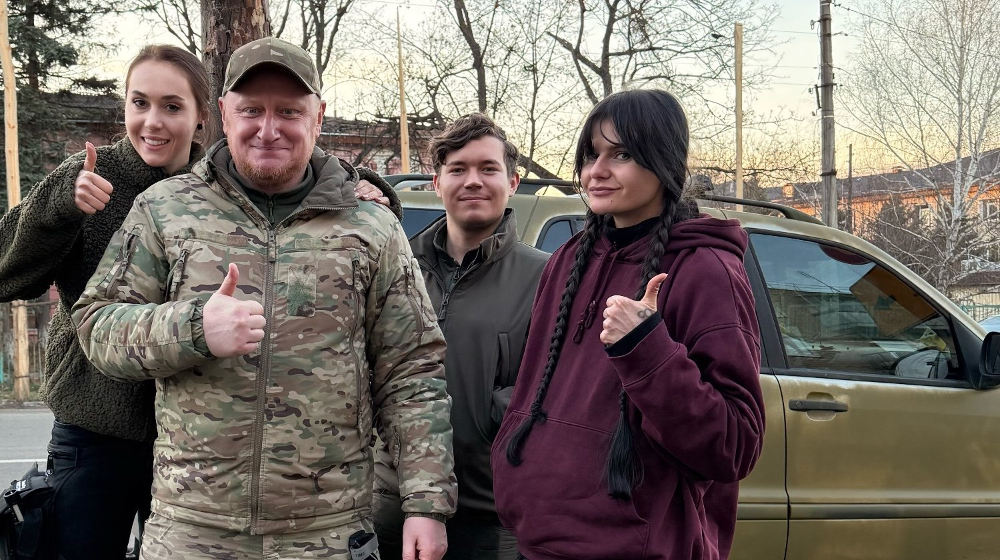
On trips, what seems important on a daily basis quickly fades away. The latest phone, a designer handbag, perfect make-up or an impressive figure do not say whether you can rely on someone.
You can recognize a person by whether he notices other people's tiredness, knows how to listen, gives a hand and stays by when there are no words. In such moments, friendships, deep bonds, and sometimes even love are born. It doesn't have to be named or put on display for it to be real.
We come back with gratitude for people with whom you can be yourself - without posturing and pretending to always be strong. In the end, what matters is not the appearance, but the heart.

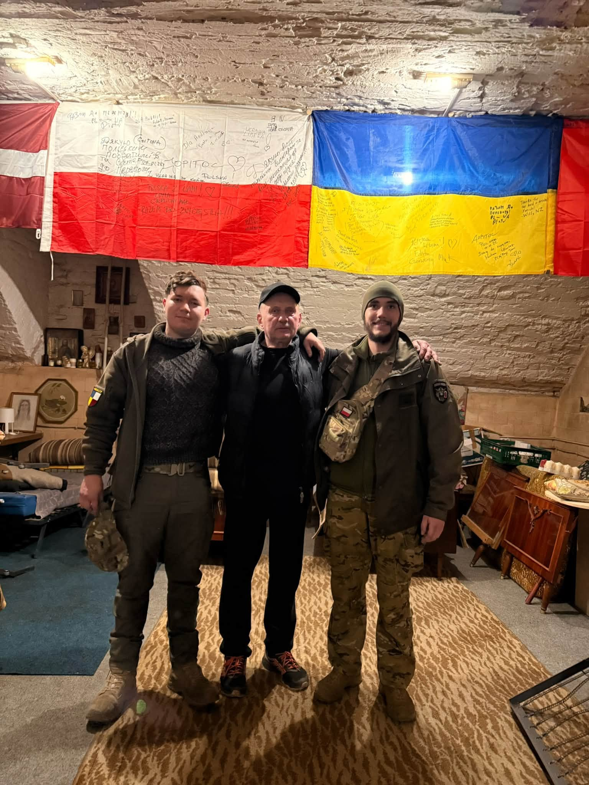
At the beginning of the war, editorial offices from various countries talked about what was happening in Przemyśl and near the border. Later, publications devoted directly to SZALIKI and the people creating this aid appeared.
BBC Newsnight reported from the Polish-Ukrainian border and the station in Przemyśl, where refugees and volunteers were meeting.
Watch the BBC material ↗Japan · Nippon TVJapanese television talked about the work of volunteers helping people fleeing the war.
Watch the report ↗YouTube · ŻycioRysyStanisław Rudowicz talks about his volunteering experience and team work.
Watch the conversation ↗Germany · Schwäbische PostInterview with Sarah-Johanna Hamera about help at the border, first trips and people who received support.
Read article ↗International · IFESThe publication describes how partners from Germany and other countries have joined forces to organize aid and supplies with SZALIKI.
Read the publication ↗Ireland · RTÉThe material about Poland as a close ally of Ukraine also talks about the how SZALIKI began and help on the border.
Read article ↗Poland · Tarnowskie Góry InfoA conversation about missions, fear and joy from simple gestures.
Read conversation ↗Poland · GwarekReport about SZALIKI, the team and the personal delivery of aid to people in Ukraine.
Read the report ↗A conversation about war, humanitarian aid and the power of solidarity - from the perspective of people who provide this aid.
Listen to the episode ↗Description and publication in the Media Library ↗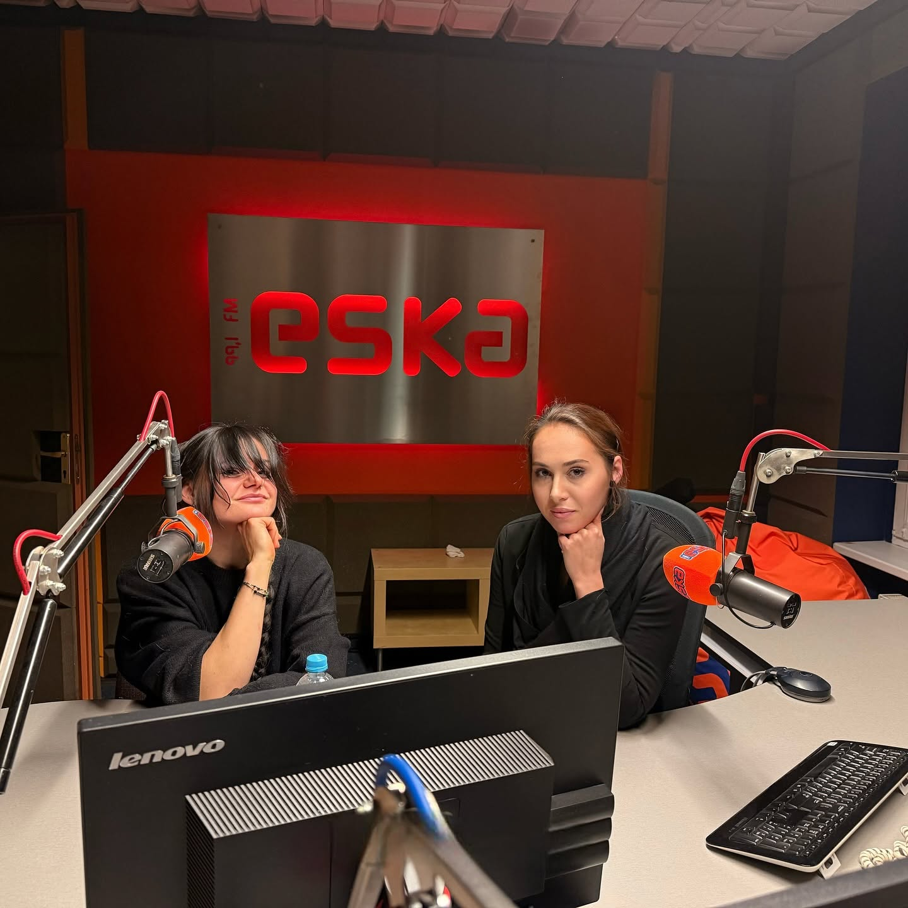
In the studio we talked about our work and humanitarian aid. We leave a link to the SZALIKI publication next to the photo.
See reports and publications ↗Radio ESKA - Action Podcast · TVP Katowice - Live interview in the studio.
We will add audio and video materials when we have access to archived recordings.
The photos show anti-drone nets, our car and destroyed houses and blocks of flats.
Here someone came back after work, fed the child, arranged blocks. Someone was getting ready for a date, someone was doing homework. Today there were broken windows, torn walls and rubble. These were someone's houses.
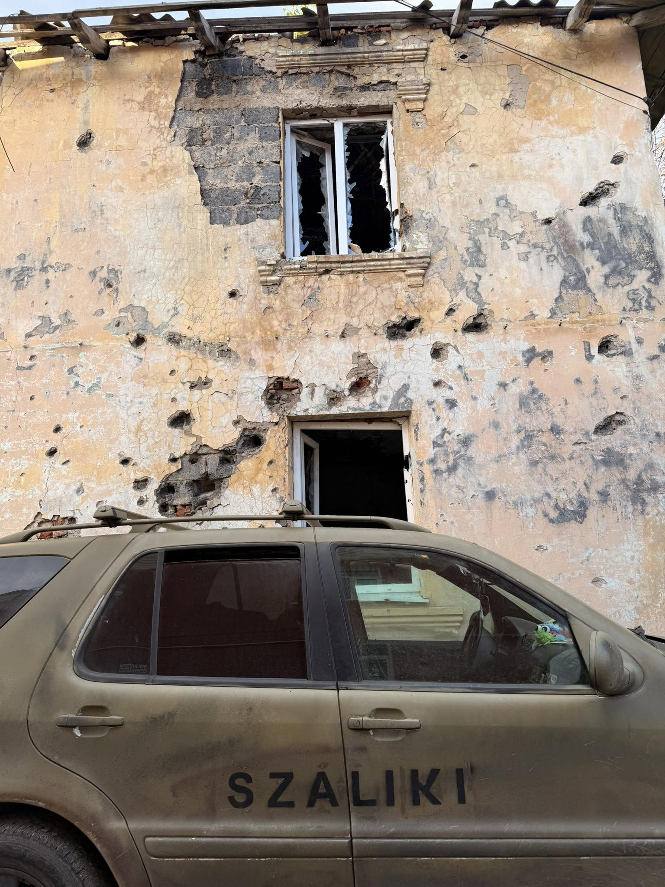
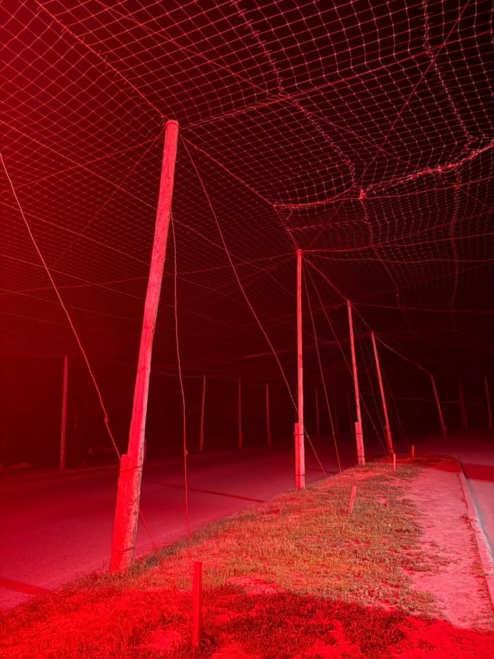

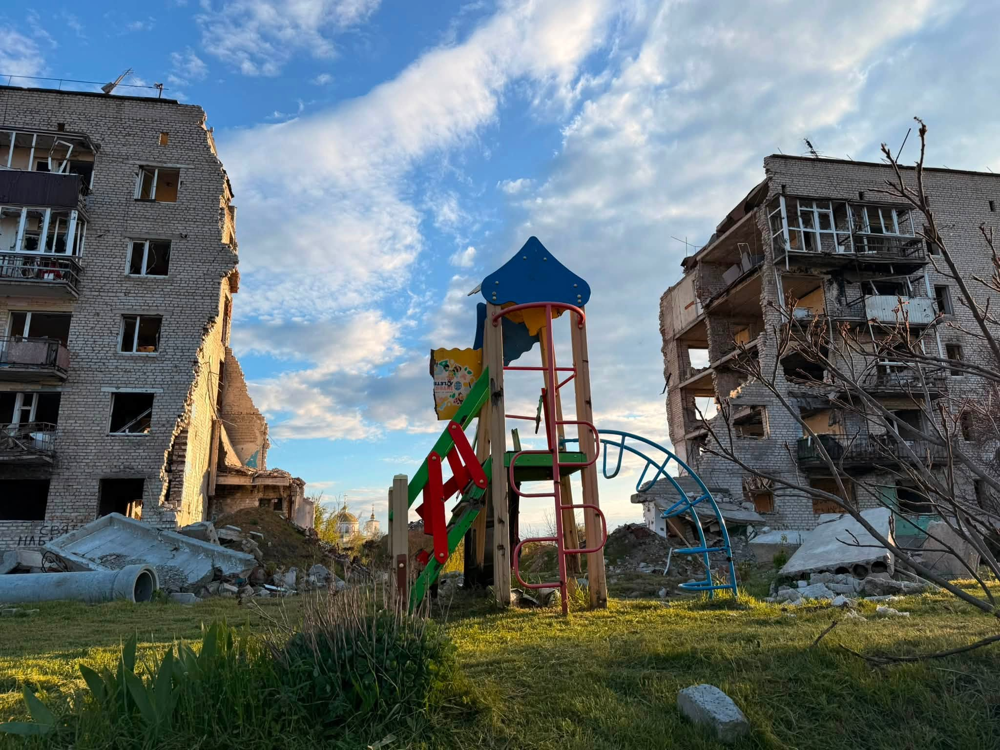


During one of our trips, two Russian drones were looking for us - hunting us. We hid in the bushes and waited for the danger to pass. There were times when we were really close to tragedy.
A resident of Kherson described such a threat as "human safari" - hunting people using drones. This is a term from civilian accounts, not a figure of speech.
The Geneva Conventions and humanitarian law are intended to protect civilians. Meanwhile, the UN documented Russian attacks in populated areas that violated the principles of this law (findings of the UN Independent Commission of Inquiry on Ukraine ↗). We must not pretend that this is a distant problem.
We're not talking about making a hero out of risk. We want to honestly show what our trips are like: difficult conditions, little sleep, makeshift rest areas and the constant need to take care of yourself and others. This is not a camping or hiking trip.
Our group is well-coordinated because we know each other's strengths, weaknesses and limits. Everyone's safety depends on trust, honesty and responsibility for each other. It also requires revealing ourselves and saying it directly when something is beyond our capabilities.


We delivered food to places that are difficult and dangerous to reach. We helped evacuate animals and found adoptive homes for some of them in Poland.
The animals from Kramatorsk that can be seen in the photos have already been safely removed. The photo with the cat and the helmet was taken in a village near Kharkov.
You can support this help with a donation or donate food. Write to us - we will determine what you currently need and how to deliver it.


When Poland was hit by the flood, we were among the first to help you act. We returned there several times with humanitarian aid. We also support shelters and local campaigns, including those aimed at poor people. We help where we may be needed - in Ukraine and Poland.